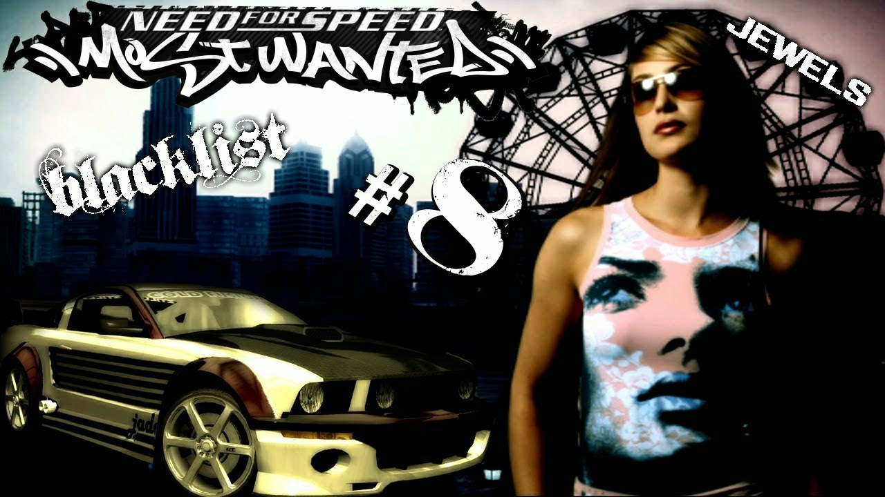

Need for Speed: Most Wanted es un videojuego de carreras desarrollado por EA Black Box y lanzado primero por Electronic Arts el 16 de noviembre de 2005 en los Estados Unidos. Es parte de la serie de videojuegos Need for Speed. El juego reintroduce persecuciones policíacas hacia un juego orientado a las carreras ilegales, con ciertas opciones de personalización. El juego sigue una línea de historia muy distinta que no guarda relación directa con los acontecimientos de Need for Speed: Underground y Need for Speed: Underground 2 y en 2006 sería lanzado una secuela del juego titulado: Need for Speed: Carbon, el cual sirve como la segunda parte de Most Wanted. Most Wanted trajo muchas mejoras y adiciones notables sobre otras entradas de la serie, y su principal punto culminante son las actividades policiales más profundas. Ciertas ediciones del juego también se empaquetaron con la capacidad de juegos multijugador en línea. Tras su lanzamiento, el juego recibió críticas positivas de los críticos y se convirtió en un éxito comercial, vendiendo 16 millones de copias en todo el mundo, convirtiéndose como resultado en una de las mejores entradas de la serie. Su éxito más tarde condujo a una edición de coleccionista, Black Edition, que proporcionó contenido adicional para el juego.
La historia central del juego gira en torno a un joven proveniente de Palmont City
llamado Brian, el cual llega a la ciudad de Rockport al volante de un BMW M3 GTR E46.
Después entrar súbitamente en Rockport, se aparece un Mazda RX-8 Speed T conducido
por una chica llamada Mia Townsend (Josie Maran), quien desafía a Brian a una carrera
amistosa por los muelles y parte del centro de Rockport. Después de la pequeña carrera
con Mia, ambos llegan hasta una intersección donde súbitamente son interrumpidos por
la aparición de un Chevrolet Corvette C6 Z06 policial conducido por el sargento del
Departamento de Policía de Rockport llamado Cross (Dean McKenzie). En ese instante,
Mia inmediatamente se escapa de la escena luego de ver al oficial de policía y deja a
Brian siendo confrontado por Cross y su compañera quienes intentan arrestar a Brian,
debido a su posible vinculación con las carreras callejeras de la ciudad o incluso por
el tipo de auto que este lleva y quieren verificar que todo en el vehículo haya sido
comprado legalmente, sin embargo en ese mismo momento, la radio de la policía les informa
a todas las unidades policiales en el área que hay una carrera ilegal en progreso y donde
múltiples vehículos tratan de evadirse de las unidades policiales que los persiguen,
por lo que deben retirarse a acudir a la persecución mencionada. Sin más opción, Cross
decide dejar ir a Brian por el momento, pero antes de irse le advertirle diciendo:
"La próxima vez no tendrás tanta suerte", luego termina rayando el BMW M3 GTR E46 de
Brian con las llaves de su propio Corvette (de ahí se deduce que Cross le tiene un odio
profundo al protagonista desde el principio), momentos después Cross y su compañera suben
a su Corvette C6 y salen a atender la persecución ya mencionada, mientras que Brian por su
parteabandona la escena rápido y queda muy pensativo con la pequeña advertencia de Cross.
Dos días después de la intervención de Cross en el centro, Brian sigue su recorrido
por la ciudad en búsqueda de una carrera y se topa con un Toyota Supra de color
amarillo conducido por Ronald "Ronnie" McCrea, el cual lo desafía a una carrera.
Tras ganar la carrera, Brian sigue a Ronnie hasta llegar con Clarence "Razor" Callahan
(Derek Hamilton), miembro número 15 de la "Blacklist" (la lista de los 15 corredores
más buscados por el Departamento de Policía de Rockport) quien le menciona a Brian
que se marche inmediatamente del lugar. Sin embargo, Mia se aparece en la escena y le
menciona que el protagonista vale mucho más de lo que él considera, pero en eso, Razor
le menciona que su Ford Mustang GT de color negro puede vencer a quien sea, incluyendo
al BMW M3 GTR E46 de Brian. En ese instante, Mia le menciona a Razor de por que no
hacen una apuesta para demostrarlo y este último decide apostar $5.000 creyendo que un
amigo suyo puede vencer fácilmente al protagonista, pero en ese momento Mia le pregunta
a Razor sobre porqué mejor no corre el mismo contra Brian, en lugar de su amigo y este
en su defecto le menciona a Mia que él no correrá contra un don nadie como Brian y que
nunca sigue las órdenes de una chica que se acaba de aparecer. En ese momento, Ronnie
también le menciona que como Razor es el miembro número 15 de la Blacklist, a Brian le
falta mucha reputación para poder competir contra él. Entonces, un amigo de Razor
llamado Toru "Bull" Satō, desafía a Brian a una carrera, pero Mia sugiere mejor subir
la apuesta $10.000 y Razor creyendo que su amigo Toru ganará la carrera fácilmente,
decide aceptar el reto, por lo que Brian y Toru se enfrentan en una carrera en la que
interviene la policía, pero a pesar de la intervención de estos últimos, el protagonista
logra ganar la carrera y 2 días después se arma con una gran reputación. Un día, Brian
conoce a un corredor llamado Rog, quien usa un Pontiac GTO negro con un gran vinilo rojo
que lo ayudará en todo el juego (dándole varias instrucciones vía mensaje de texto y voz,
como por ejemplo: en qué momento se puede que enfrentar a cualquier miembro de la Blacklist,
dándole consejos al protagonista sobre elementos que pueden ayudarlo, información de las
próximas patrullas, etc). Tras la carrera, Rog le menciona que le agrada el estilo de
manejo de Brian y le advierte que tenga cuidado con Razor y sus secuaces, ya que son muy
peligrosos y se retira del lugar, pero justo en ese momento, se aparece Razor en su
Ford Mustang GT de color negro con pegatinas de flamas, las cuales tienen arriba de las
mismas las iniciales de su nombre en la Blacklist y mientras elogia su auto, argumenta
que "se muere de ganas de poder usarlo" y le advierte que si quiere competir contra un
miembro de la Blacklist tiene que apostar el auto y añade que "por algo, la gente no lo
hace, no es estúpida" y se retira mientras le dice a Brian que lo estará esperando para
competir contra él.
Unos días antes de la carrera, Mia le mencionó a Razor que su Ford Mustang GT no tiene
posibilidades de ganar contra el BMW M3 GTR E46 de Brian. Finalmente llega el día de la
carrera contra Razor y donde todo parece estar a favor de Brian en donde incluso interviene
la policía, pero logran perderlos en el trascurso, sin embargo, cuando están cerca de los
muelles, Mia llama a Brian para informarle que su auto dejó una enorme mancha de aceite
en la línea de arranque y le dice que tiene que acabar con la carrera lo antes posible,
esto se debe a que los secuaces de Razor habían saboteado el auto justo antes de la carrera
(cortando los conductos del aceite de motor para que se detenga) y se deja una pista cuando
uno de los secuaces de Razor, Ronnie le informa a Brian diciendo: "¿Qué tal va tu auto?"
(dando a entender que él fue quién saboteó el auto un día antes). Tras la pérdida de aceite
en la zona de los muelles, el auto se descompone y al final, Brian pierde la carrera.
Posteriormente, Razor gana haciendo trampa y se apodera del BMW M3 GTR E46, sin embargo,
cuando estos se disponían a burlarse del protagonista por su derrota, Joe "JV" Vega,
miembro número 4 de la Blacklist les avisa a todos los demás miembros de la Blacklist que
la policía se aproxima al lugar, por lo que todos proceden a escapar rápidamente del lugar
antes de que lleguen, pero antes de irse, Razor se le acerca a Brian y le menciona en tono
sarcástico que la parada del autobús esta más adelante y se retira del lugar.
Poco después de que todos los miembros de la Blacklist escapen de la escena, la policía
finalmente se aparece en el lugar junto con el Sargento Cross y su compañera quienes le
recuerdan a Brian que tienen una deuda pendiente con él y posteriormente lo arrestan,
luego la compañera de Cross le pregunta en donde está su BMW M3 GTR E46 con el que entró
la primera vez que se vieron, pero Cross le menciona que eso no será necesario, ya que a
donde llevarán al jugador no lo va necesitar y que estará un largo tiempo en prisión.
Tres semanas después de su arresto, Brian es liberado de cargos, debido a la falta de
evidencia (ya que era difícil que lo procesaran por carreras callejeras si ya no tenía el
auto en su posesión) y una vez que sale de la jefatura de policía, se encuentra nuevamente
con Mia, quien le pide que suba a su auto para dar una vuelta con ella. Posteriormente,
Mia le menciona a Brian que durante el tiempo que estuvo encerrado en prisión, Razor ha
subido hasta la primera posición de la "Blacklist" usando el BMW M3 GTR E46 de este y le
informa acerca de sus planes para llegar hasta Razor y recuperar el auto que Razor le ganó
injustamente. Luego del recorrido, Mia lleva al jugador hasta un concesionario para que
este compre uno de los cuatro autos que están disponibles, debido a su bajo prestigio y
más que todo por la falta de dinero, teniendo como disponibilidad solo un Lexus IS 300,
un Fiat Punto, Chevrolet Cobalt SS y un Volkswagen Golf GTI V. Además, Mia le indica lo
que debe hacer para subir posiciones en la "Blacklist" donde simplemente es una aventura
donde debe ganar reputación, notoriedad en la Blacklist y dinero para mejorar o comprar
autos, para llegar al momento de enfrentarse al miembro en turno de esta misma para ocupar
su posición.
Tras varias carreras ganadas contra los contrincantes de la Blacklist, Brian logra adquirir
una gran reputación y tiene la oportunidad de adquirir premios tales como el auto del
oponente, pases para salir de la cárcel, piezas o pintura gratis o hasta dinero, hasta que
llegue el momento de derrotar a Razor y recuperar el BMW M3 GTR E46. Pero a pesar de
tener gran notoriedad en la Blacklist, Brian también comienza a ganarse con el tiempo
a varios enemigos, entre ellos, los corredores de la Blacklist que va derrotado en su
ascenso en la Blacklist y además de quitarles sus respectivos autos a estos últimos.
Además de ellos, también otro enemigo que empieza a ganarse con mayor frecuencia es la
mismísima policía de Rockport,
ya que estos últimos comienzan a perder la paciencia por arrestar a Brian y comienzan a
seguirlo cada vez más de cerca, ya que estos han tenido varios intentos por capturarlo en
más de una ocasión, pero este siempre se las ingenia para escapar de ellos, lo que a su
vez comienza una cacería indispensable por parte del Sargento Cross por capturarlo y
empieza a volverse casi su sombra en caso de que lo detecte.
Cuando finalmente Brian alcanza a enfrentarse a Razor, este se jacta de que la última
vez le dio mucha suerte con su BMW M3 GTR E46, pero Mia le menciona que siga corriendo
como siempre y la carrera será suya fácilmente y que recupere su auto al final, ya que
ella se encargaría del resto. Finalmente y tras varias pruebas, Brian consigue vencer
de una vez por todas a Razor, pero justo cuando este se prepara para recuperar
las llaves de su auto, en la cual se encuentran todos los corredores a los que ya se
habían derrotado previamente, Razor quien en un principio, se niega a devolverle las
llaves del BMW M3 GTR E46 a Brian como parte del acuerdo. Cuando Razor le menciona
Brian que no le entregará nada y que no durará mucho tiempo como el número 1 de la
Blacklist, Mia le arrebata las llaves y le responde a Razor que todo se acabó.
Sin embargo, Razor por su parte, le menciona que esto no se termina hasta que él diga
que se acabó y trata de recuperar las llaves del BMW M3 GTR E46, pero Mia rápidamente
golpea y reduce con facilidad a Razor, lo que a su vez provoca que los demás miembros
de la Blacklist intenten usar la fuerza para recuperar las llaves, pero súbitamente
Mia les muestra al grupo una pistola escondida debajo de su chaqueta con una funda
idéntica a la que usa Cross, dando a entender a los miembros de la Blacklist y
especialmente a Brian que esta última en realidad es una oficial de policía encubierta.
Inmediatamente, todo un batallón de policías (incluyendo el helicóptero policial liderado
por el Sargento Cross) se acercan a la zona para atraparlos a todos (incluyendo a Brian),
pero unos segundos antes de que lleguen al lugar, Mia lanza las llaves del BMW M3 GTR E46
a Brian para que este último pueda escapar rápidamente de la escena antes de que
llegue la policía.
Al llegar el Sargento Cross con el resto de la policía a la escena, inmediatamente
ponen a Razor bajo custodia, al igual que todos los demás miembros de la Blacklist,
quienes también son arrestados en el proceso. Por otro lado, el Sargento Cross le
pregunta a Mia sobre el paradero de Brian y esta última le contesta que se había
escapado. Muy enfurecido al enterarse de esto, el Sargento Cross le ordena a su
acompañante que llame a todas las unidades federales de incógnito (Condición 6 de
persecución), para que acudan a la persecución y que capturen a Brian a toda costa.
En plena persecución, el Sargento Cross se comunica con Brian para tentarlo a
entregarse ante la policía (luego de haberlo rastreado a su punto de reunión con
Razor), pero después de 5 minutos de una frenética y desesperada persecución,
Mia llama a Brian mientras huye, diciendo con una voz de arrepentimiento por lo que
hizo, le pide que no cuelgue la llamada y le informa que se dirija a un viejo puente
(el cual siempre está cerrado hasta el final) en media construcción por dos motivos.
El primero, es que el Sargento Cross y la policía de Rockport ya conocen todos los
refugios usados para la evasión y la segunda, es que el BMW M3 GTR E46 de Brian tiene
la potencia suficiente para lograr un gran salto y escapar. Finalmente y tras una
caótica persecución, Brian llega hasta el puente y acelera su auto al máximo para
realizar el salto sobre el mismo, logrando atravesarlo con éxito y escapa de la ciudad
de Rockport, dejando al Sargento Cross y a la policía atrás.
A continuación, el juego termina concluyendo en que Brian ahora es el número
1 de la Blacklist de Rockport. Esto puede observarse cuando el Sargento Cross
ingresa en la base de datos el nombre del mismo y lo pone como un sujeto al
cual debe atraparse de inmediato en caso de que sea detectado, no sólo a nivel
local, sino también a nivel federal, en la lista de los más buscados y debe ser
detenido a toda costa. Un tiempo después de estos acontecimientos y haber
escapado de Rockport, Brian conduce de regreso en el Cañón Carbon, al norte del
distrito de Silverton, dirigiéndose de regreso a su ciudad natal: Palmont City.
La Blacklist es una lista que contiene a los 15 corredores más buscados de la
ciudad de Rockport, para enfrentarse a cada uno de ellos se debe superar un número
determinado de carreras, unos hitos y una respectiva bolsa, las carreras pueden ser
de 6 clases distintas; Circuito, Cabinas de peaje, radares de velocidad, eliminación,
sprint y aceleración, una vez que el protagonista, Brian entra en la Blacklist se
debe de vencer a los siguientes corredores y una vez vencidos este ocupara su puesto.
Por cada corredor vencido, el jugador accederá a seis o siete tarjetas de recompensa
de las cuales podrá escoger dos. Entre los premios se encuentran pases para salir de la
cárcel, dinero en efectivo, más espacios para órdenes de imposición, mejoras exclusivas
de personalización o rendimiento, o la tarjeta rosada del coche del corredor derrotado.
Entre los miembros de la Blacklist se encuentran:
#15 Nombre: Ho Seun (Sonny)
Procedencia: Hillscrest.
Auto: Volkswagen Golf GTI V.
Mejor en: Circuito.
Sonny es un asiático que se ha gastado mucho dinero en su auto, el cual esta bastante
tuneado hasta la última pieza, pero no hay que subestimarlo, ya que es muy rápido y
hace lo que sea por obtener un cargamento de piezas antes de que estas se vendan en
las tiendas. Se debe de vencerlo en 2 carreras de circuitos.
#14 Nombre: Vince Kilic (Taz)
Procedencia: Rockridge.
Auto: Lexus IS 300.
Mejor en: Sprint.
Este demente al volante es el blanco preferido de la policía. En la Blacklist lo
conocen por el alias de "Taz". Él detesta a los policías y ellos lo detestan a él.
Se debe tener cuidado con este sujeto, ya que deambula por las calles buscando
novatos a los cuales vencer. Se debe vencerlo en 2 carreras de sprint.
#13 Víctor Vázquez (Vic)
Procendencia: Petesburg.
Auto: Toyota Supra.
Mejor en: Duración de persecución.
Este sujeto es el matón de Razor, lleva más tiempo en la posición 13 de la blacklist
de lo que este pueda gustarle. No es capaz de enfrentarse a su compañera de la lista
Izzy y nadie ha conseguido sacarlo de la posición de la que a estado. Este sujeto es
muy peligroso y hará pedazos a cualquiera que se le cruce en su camino. Se debe
vencerlo en 2 carreras de sprint.
#12 Isabel Díaz (Izzy)
Procedencia: North Rosewood.
Auto: Mazda RX-8.
Mejor en: Carreras por eliminación.
Izzy es una chica con la que se debe tener bastante cuidado, esta chica sabe de
mecánica y gracias a eso su auto es muy rápido. Proviene de una familia de
corredores y siempre corre con sus primos, tíos o amigos y le gusta ser tratada
igual que a los demás. Se debe vencerla en una carrera de sprint y una carrera de
circuito.
#11 Lou Park (Big Lou)
Procedencia: East Rosewood.
Auto: Mitsubishi Eclipse GT.
Mejor en: Cabinas de peaje.
Este coreano musculoso es el preferido de las mujeres y le gusta exhibirse mucho
por las calles. Se rumora que este le tiene miedo a la policía y en ocasiones a
fallado en las persecuciones y lo han arrestado muy raras veces; además también
se dice que no sabe darle bien al embrague de su auto, así que su arranque debe
de ser bastante lento. Se debe vencerlo en 2 carreras de circuitos.
#10 Karl Smith (Baron)
Procedencia: Heritage Heights.
Auto: Porsche Cayman S.
Mejor en: Infracciones.
Baron es un millonario de la costa de Rockport, él piensa que tunear los autos
es solo una escusa para justificar la falta de dinero. Para él si un auto no es
de marca no vale nada. Se debe vencerlo en una carrera de sprint y una carrera
de aceleración.
#9 Eugene James (Earl) El Rey de las Calles
Procedencia: Gray Point.
Auto: Mitsubishi Lancer Evolution VIII.
Mejor en: Sprint.
Este hombre Afroamericano viene de los suburbios de Rockport, pero ahora le
gusta correr por la costa, es un fanático de la importación y hará cualquier
cosa para ganar. Se debe vencerlo en una carrera de radar de velocidad y una
carrera de sprint.
#8 Jade Barret (Jewels)

Procedencia: North Bay.
Auto: Ford Mustang GT.
Mejor en: Aceleración.
Esta hermosa chica le encantan los autos grandes y con potencia especialmente
americana. Su auto tiene bastante velocidad y máxima aceleración, así que hay
que tener cuidado y no subestimarla. Se debe vencerla en una carrera de sprint
y una carrera de aceleración.
#7 Nombre: Kira Nakasato (Kamikaze)
Procedencia: Ocean Hill.
Auto: Mercedes-Benz CLK 500.
Mejor en: Costos para el estado.
Esta asiática es una demente y una manatica al volante, no le importa destruir
su auto con tal de sacar a cualquiera de la carrera, pero no hay que dejar que
su cara bonita nos engañe, ya que ella está decidida a aplastar cualquiera que
se cruce en su camino si la dejan hacerlo. Se debe vencerla en 2 carreras de sprint.
#6 Héctor Domingo (Ming)
Procedencia: Rockport.
Auto: Lamborghini Gallardo.
Mejor en: Radar de velocidad.
Ming se enorgullece mucho de conducir su auto que parece de serie, debido
a la clase de auto que posee es bastante rápido y fulmina todos los radares
de velocidad que se encuentran en la ciudad. Se les recomienda a los corredores
no enfrentarse a este sujeto, hasta que uno este completamente preparado para
enfrentarlo. Se debe vencerlo en una carrera de circuito y una carrera de sprint.
#5 Wes Allen (Webster)
Procedencia: Candem Beach.
Auto: Chevrolet Corvette C6 Z06.
Mejor en: Evadir persecución.
Este sujeto no deja de hablar de autos, refacciones, piezas de carrocerías,
corredores, etc... Su auto esta bastante tuneado al máximo e incluso ha vaciado
el interior de su auto para correr aún más rápido. Se debe vencerlo en 2 carreras
de sprints y una carrera de radar de velocidad.
#4 Joe Vega (JV)
Procedencia: Dunwich Village.
Auto: Dodge Viper SRT 10.
Mejor en: Radar de velocidad.
JV es un DJ, se la pasa todas las noches en los clubes nocturnos y de día a
veces se lo ve corriendo; tiene mucha reputación y los corredores siempre
tratan de imitarlo, su auto es inconfundible, está pintado de un color verde
fucsia. Se debe vencerlo en 2 carreras de radar de velocidad y una carrera de
aceleración.
#3 Ronald McCrea (Ronnie)
Procedencia: Seadside.
Auto: Aston Martin DB9.
Mejor en: Destuir autos patrulla.
Este sujeto es un viejo conocido del principio del juego, Ronnie es uno de los
guardaespaldas de Razor, antes conducía un Toyota Supra amarillo, pero ahora
se lo ve con un auto nuevo, que fue un "regalo de graduación" de sus padres.
Este tonto es descendiente de una familia multimillonaria de la ciudad, pero
se cree un rebelde sin causa, por su apellido y por la pintura de su auto es
obvio que no es de por aquí, pero no hay que subestimarlo, ya que después de
su derrota contra Brian la primera vez que se enfrentaron, aprendió nuevas
maniobras de manejo en las calles. Se debe vencerlo en 2 carreras de circuitos
y una carrera de sprint.
#2Nombre Toru Satō (Bull)
Procedencia: Cascade Park.
Auto: Mercedes-Benz SLR McLaren.
Mejor en: Sprint.
Este asiático también es un viejo conocido del principio del juego
el cual Brian venció con su BMW M3 GTR E46, la primera vez que se
enfrentaron, es el segundo guardaespaldas de Razor y sino fuera
por él, Toru seguiría soñando con entrar en la Blacklist. Él cree
que tiene un "Don oculto", llamado psicología inversa; a Toru le
encanta exhibir su auto por las calles de la ciudad y lo único de
tuning que tiene son las refacciones que le hizo. Se debe vencerlo
en una carrera de circuito y 2 carreras de sprint.
#1 Clarence Callahan (Razor)
Procedencia: Beacon Point.
Auto: BMW M3 GTR E46.
Mejor en: Todo.
Razor también es un viejo conocido del principio del juego, antes
conducía un Ford Mustang GT negro con pegatinas de flamas y sus
iniciales en ellas, pero este sujeto junto con Ronnie y Bull habían
saboteado el BMW M3 GTR E46 de Brian en el primer encuentro que ambos
tuvieron la primera vez y gracias a eso este pierde su BMW M3 GTR E46
contra él. Durante el tiempo que el protagonista estuvo encerrado en
prisión, Razor utilizó el BMW M3 GTR E46 de Brian para llegar rápidamente
a la primera posición de la Blacklist y corre libremente por todas las
calles de la ciudad como si le pertenecieran, se debe tener cuidado con
Razor, ya que este hará cualquier cosa con tal de mantenerse en la
primera posición de la Blacklist. Se debe vencerlo en una carrera de
circuito, una carrera de aceleración, una carrera de radar de velocidad
y 2 carreras de sprints.